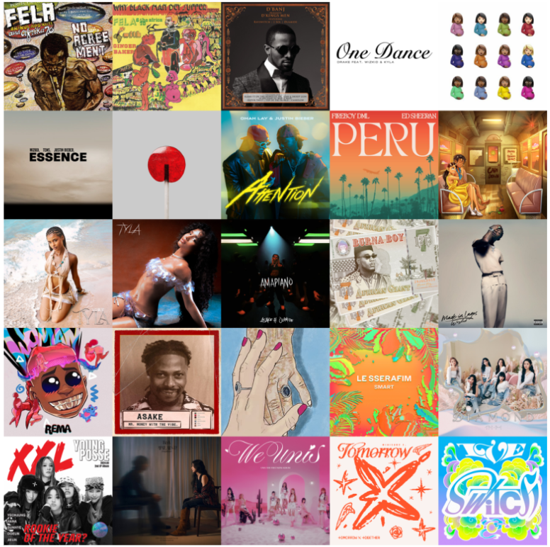

고정관념 깨기
"아직도 열대우림에서 동물들과 함께 부족생활을 하며 살 것이다?"
아프리카는 지금 전 세계 대중문화 트렌드를 주도하고 있습니다. 영화와 음악을 통해 살아 숨 쉬는 현대 문화를 확인해 보세요.
영화 산업
나이지리아
나이지리아 '놀리우드'
한 해 2,500편 이상의 영화를 제작하는 글로벌 영화 강국

images/culture_nollywood.jpg 사진 위치
할리우드, 볼리우드와 함께 세계 3대 영화 산업으로 불립니다. 아프리카인의 시선으로 현대적 도시 생활과 사회적 이슈를 담아내며 전 세계 넷플릭스 등 글로벌 플랫폼을 강타하고 있습니다.
제작 규모 세계 2위
소프트파워 선도
음악 & 글로벌 팝
서아프리카 발원
글로벌 열풍 '아프로비츠'
빌보드와 그래미 어워즈를 점령한 아프리카 팝 음악

images/culture_afrobeats.png 사진 위치
나이지리아와 가나 등 서아프리카의 전통 리듬에 현대 힙합, R&B를 결합한 장르입니다. 타일라(Tyla), 레마(Rema) 등의 아티스트가 전 세계 스트리밍 수십억 회를 기록하며 K-POP 못지않은 신드롬을 일으키고 있습니다.
그래미 신설 부문 수상
글로벌 팝의 중심
* 등록된 의견은 Final에서 확인 가능
학생 참여